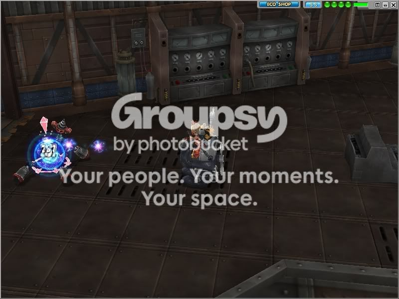

หน้า 167 จากทั้งหมด 230

โพสต์แล้ว:
พุธ 30 ก.ค. 2008 9:07 pmโดย ECO
job เท่าไรกันบ้างแล้วเอ่ย

โพสต์แล้ว:
พุธ 30 ก.ค. 2008 10:00 pmโดย ECO
DoraDemon เขียน:phichai2002 เขียน:Senzt เขียน:ตัวกลมๆ มีใบพัดอะ ใช่ตัวที่ตกการ์ดป่าวหว่า -w-
ที่คิดคือว่า มันก็ตกไม่ง่ายหรอก อาจจะยากถ้าตั้งใจไปหา
แต่ถ้าคนต้องการอาวุธ 90 ยังไงก็ต้องมีคนตีแล้วได้มา
เหมือนดัน 70 ที่เป้าหมายคือการเข้าไปเก็บ Lv. แต่ได้ทรานมาเพียบเลย
------------------------------------------------
แต่ถ้าใช่มันยังไม่ตกเลยหรอ *0* หรือต้องมีปราชญ์หุ่นยนต์...
ยิงมาก็เยอะแต่ไม่เห็นหล่นเลยน่ะทรานม่วง สงสัยต้องมีปราญหรือเปล่า
ตัวกลมๆนั่นสงสัยจะ hologram ละเห็นเพื่อนบอก ถ้ามีโนวเลจของ m/c เราการ์ดจะตกง่ายขึ้นนะ
แต่ทรานม่วงเราก้อยังไม่เห็นซักอันเหมือนกัน
ตีแล้วเหมือนกันไม่ยักตกทรานม่วงซักอัน งง งง งง :?: :?: :?: :?: :?:
โพสต์แล้ว:
พุธ 30 ก.ค. 2008 10:57 pmโดย ECO
ยังไม่เจอทรานม่วงเหมือนกัน
แต่ได้แขนหุ่นมาอันนึงจาก Return of Gatenga
โพสต์แล้ว:
พฤหัสฯ. 31 ก.ค. 2008 12:55 amโดย ECO

สกิลน่ารักจัง :oops: [/img]
โพสต์แล้ว:
พฤหัสฯ. 31 ก.ค. 2008 6:59 amโดย ECO
Senzt เขียน:DoraDemon เขียน:phichai2002 เขียน:Senzt เขียน:ตัวกลมๆ มีใบพัดอะ ใช่ตัวที่ตกการ์ดป่าวหว่า -w-
ที่คิดคือว่า มันก็ตกไม่ง่ายหรอก อาจจะยากถ้าตั้งใจไปหา
แต่ถ้าคนต้องการอาวุธ 90 ยังไงก็ต้องมีคนตีแล้วได้มา
เหมือนดัน 70 ที่เป้าหมายคือการเข้าไปเก็บ Lv. แต่ได้ทรานมาเพียบเลย
------------------------------------------------
แต่ถ้าใช่มันยังไม่ตกเลยหรอ *0* หรือต้องมีปราชญ์หุ่นยนต์...
ยิงมาก็เยอะแต่ไม่เห็นหล่นเลยน่ะทรานม่วง สงสัยต้องมีปราญหรือเปล่า
ตัวกลมๆนั่นสงสัยจะ hologram ละเห็นเพื่อนบอก ถ้ามีโนวเลจของ m/c เราการ์ดจะตกง่ายขึ้นนะ
แต่ทรานม่วงเราก้อยังไม่เห็นซักอันเหมือนกัน
ตีแล้วเหมือนกันไม่ยักตกทรานม่วงซักอัน งง งง งง :?: :?: :?: :?: :?:
นอกจาก Holograph ตัวนี้แล้วยังมี SearchEye และ SearchKill อีก 2ตัวที่รูปร่างเหมือนกับ Holograph (แต่ไม่เก่งเท่า Holograph)
แต่ลองอ่านใน eco wiki แล้ว ทั้ง 3 ตัวไม่ตก ทรานม่วง เลยนะ ตกแต่ทรานฟ้า(Magic def) ยกเว้นตัว SearchKill ที่ตก ทรานน้ำเงินด้วย
โพสต์แล้ว:
พฤหัสฯ. 31 ก.ค. 2008 9:12 amโดย ECO
!! เปลี่ยนอีกแล้วหรอ !!
ขอคอนเฟิร์มเลยว่าเคยอ่านเมื่อนานมาแล้ว
แต่ตอนนี้เปลี่ยนอีกแล้ว :?: . :?:
------------------------------------------------------
ปล. Spark Ball เจ๋งดีนะ ร่ายเร็วดี :twisted:
โพสต์แล้ว:
พฤหัสฯ. 31 ก.ค. 2008 11:08 amโดย ECO
ปลดลิมิต a.spd แล้วยิง (เป็นใช่ไหม) :twisted:
เอ่อ คืออะไรครับ ทำไม่เป็น
......
โพสต์แล้ว:
พฤหัสฯ. 31 ก.ค. 2008 3:02 pmโดย ECO
ทำไมเราใช้ค้อน 90 แล้วรู้สึกเหมือนตีเบากว่า 80 อะ +5 เท่ากัน หรือคิดไปเอง
โพสต์แล้ว:
พฤหัสฯ. 31 ก.ค. 2008 3:43 pmโดย ECO
ราเน่กลับมาแล้ว เซิพทาโก - -" หยุดไปนาน กลับมาสมทบอีกคนแล้วจร้า
โพสต์แล้ว:
พฤหัสฯ. 31 ก.ค. 2008 3:57 pmโดย ECO
เซ้น ยังเล่นของเกาหลีอยู่ป่าวอะ
ถ้ายังเล่นอยู่ไปตามล่าดูดาเมจของซัมม่อนเดธ ให้ที มันเบาเหมือนของไทยป่าว
ถ้าไม่ได้เล่นแล้วก็ไม่เป็นไร *-*
Re: ......
โพสต์แล้ว:
พฤหัสฯ. 31 ก.ค. 2008 4:54 pmโดย ECO
dotaman เขียน:ทำไมเราใช้ค้อน 90 แล้วรู้สึกเหมือนตีเบากว่า 80 อะ +5 เท่ากัน หรือคิดไปเอง
รูปร่างมันมองแล้วไม่น่าจะหวดใครตาย
เลยคิดไปเองมากกว่า
โพสต์แล้ว:
พฤหัสฯ. 31 ก.ค. 2008 4:57 pmโดย ECO
atk รวมมันต่างกันนิดเดียวเองนิ
พอรวมกับ แกว่ง ก็เลยเหมือนไม่ต่างกัน
....
โพสต์แล้ว:
พฤหัสฯ. 31 ก.ค. 2008 6:37 pmโดย ECO
และค้อน80 ที่มันบอก+ธาตุลม 50 นี่คือมีไรดี
โพสต์แล้ว:
พฤหัสฯ. 31 ก.ค. 2008 7:07 pmโดย ECO
ไม่รู้นะ เราใช้ค้อน90+7นะ ค้อน80ไม่กล้า+ เราว่าควานแรงค้อน90/80พอๆกัน นะ
ค้อว่าเราจะJOB47 ไม่รู้ไปวเลที่ไหนง่าT^T
โพสต์แล้ว:
พฤหัสฯ. 31 ก.ค. 2008 9:24 pmโดย ECO
job 48 แล้ว > <